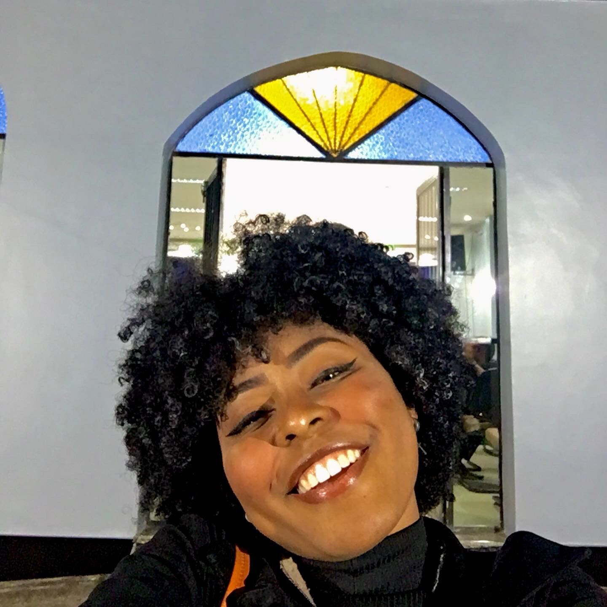

Olá, me chamo Maria Julia. Tenho 20 anos, sou nascida e criada no Rio de Janeiro.
Atualmente, faço curso de programação e sou a mais nova caloura de Engenharia de Produção do CEFET.
Sou uma pessoa aventureira e quem sempre procura coisas novas, gosto de ir à praia, fazer trilha, sair com os amigos, conhecer lugares novos e aprender mais sobre música.
Características Mindset
Inteligência
Para Maria Julia a inteligência é algo que pode ser desenvolvido, ela acredita que de uma forma similar ao músculo, o cérebro poder ser treinado e, em consequência, a inteligência desenvolvida. Dessa forma, ela é impulsionada pelo desejo de aprender e se desenvolver cada vez mais.
Desafios
Os desafios para ela são sempre bem-vindos. Ela abraça os desafios e entende que eles são excelentes oportunidades para se tornar cada vez mais forte
Críticas
Ela entende que as críticas e os feedbacks, mesmo quando negativos, são valiosas informações. Entende que os erros e fracassos são como partes normais em qualquer nova empreitada. Além disso, entende que as pessoas podem mudar e melhorar com a prática e tempo, desta forma, feedbacks negativos são recebidos não como uma crítica direta a cerca de como a pessoa é, mas assim de que suas habilidades atuais precisam ser desenvolvidas e melhoradas.
Sucesso dos Outros
Ela vê o sucesso das outras pessoas como grande fonte de inspiração e valiosas aprendizagens. Ela entende que o sucesso não é como um jogo onde para que um ganhe o outro tem que perder, mas sim que o conceito de sucesso é de abundância onde todos podem crescer juntos.
Contratempos e Dificuldades
As dificuldades e os contratempos diários, para Maria, não servem para desencoraja-la. A forma como ela se vê, a sua autoimagem, não está atrelada diretamente ao seu sucesso e, nem mesmo, ao que as outras pessoas pensam acerca dela. Ela entende que as falhas são excelentes oportunidades de aprendizagem, desta forma, independete dos resultados sabe que sempre estará vencendo.
Esforço
Ela entende que o esforço é algo necessário para o seu crescimento e o desenvolvimento de novas habilidades. Quando Maria encontra dificuldades, a sua resiliência entra em ação e não permite com que ela desista tão fácil.
Performance
Com esse modelo mental, os níveis de realização mais altos são cada vez mais alcançados. Ao passo que, ela é encorajada a continuar a aprender e se desenvolver a medida que avança.